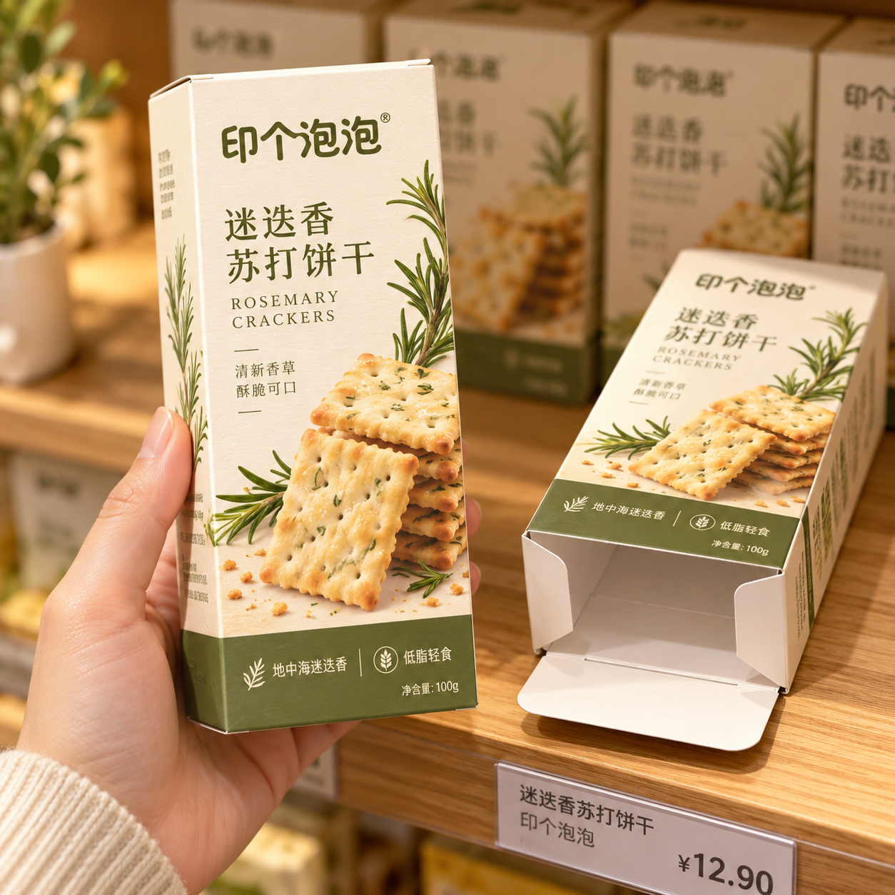

公司新闻
双插盒使用说明：先确认从哪一端打开
2026-10-17 · 印个泡泡
把陈列方向、装盒方向与消费者开口分开确认。
本文为平台盒型使用说明，不是新品或客户项目报道。可从包装产品页查找卡纸双插盒选项；实际结构和配置以双方确认文件为准。

图：平台维护方提供的设计场景素材，仅供外观和展示方向参考。不是实际客户订单、零售价格、食品标签合规或出货证据；图中产品文字、标志及价格不作为订购依据。
同一个盒子，存在不同的方向
设计稿中的上方、装盒操作时的入口、消费者拿到后打开的一端，可能并不是同一个概念。双插盒选型时，建议先把这些方向用动作说清楚，再安排主画面。
例如，希望商品在货架上竖放，消费者从上端取出；制作时是否也从这一端装入，则交由实际装盒流程确认。不要让“上开口”同时承担多个没有说明的含义。
用一张确认图把动作连起来
在结构确认图中标出正面，再标出预期陈列时朝上的一端，随后用文字说明装入方向与取出方向。若两端图案不同，要分别核对，避免只看正面效果图就忽略端部文字朝向。
拿到样品后，按真实动作走一遍：把产品装入、合上盒端、摆到预期位置，再由未参与设计的人尝试取出。观察是否容易识别入口、插舌是否影响取物，以及说明文字是否在打开前就能读到。这里是使用观察建议，不是固定的性能验收标准。
如果需要增加封签、防拆或其他配置，应单独提出。双插结构的名称本身不能证明具备这些功能，也不能说明包装已经适合直接快递寄送。
最终交接时，保留带方向标记的确认图与实际图稿版本。效果图负责帮助理解外观，方向说明负责把外观转化成一致的使用动作。
为你的产品，找到适合的包装。
选包装，获取报价 →